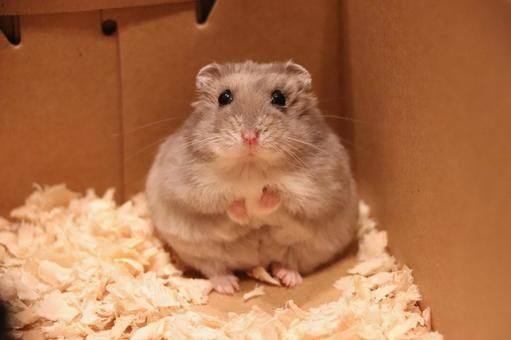
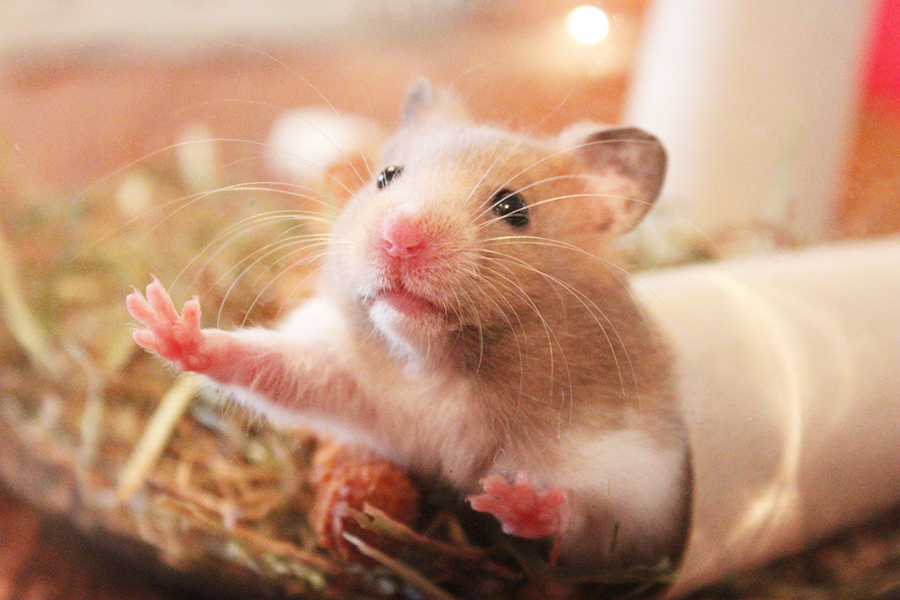
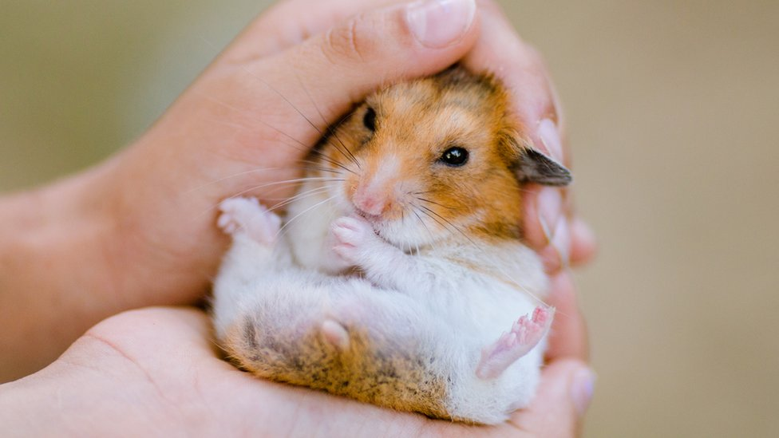
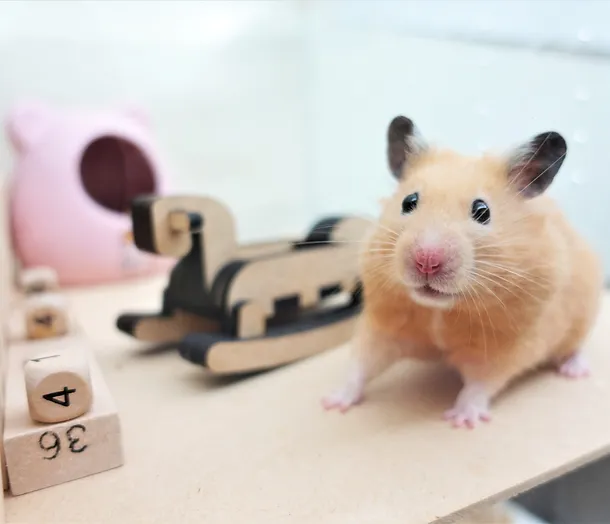
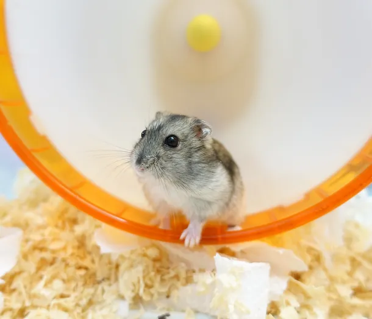
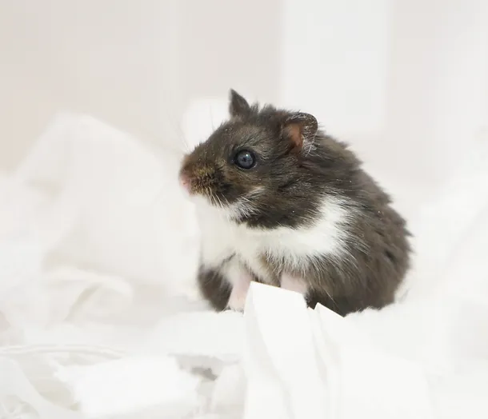
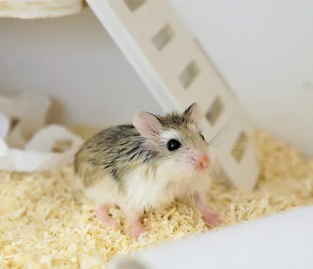

倉鼠生活趣
首頁
關於倉鼠
飼養指南
健康護理
最新文章
倉鼠簡介
倉鼠是小型哺乳動物，屬於嚙齒目，與家鼠和田鼠同屬。牠們通常被當作可愛的寵物飼養，因其活潑好動的個性而受到人們的喜愛。
  
種類與生活習性

叙利亞倉鼠
俗稱
：黃金鼠、熊鼠
身長
：12.5-18公分
壽命
：2-3年
原產地
：敘利亞
習性
：性格獨立，領域性很強，為獨居動物，不應將兩隻以上黃金鼠養在同一個籠子裡。黃金鼠是所有倉鼠中最容易親近人類，但也是最兇狠，需要大空間的鼠種。

加卡利亞倉鼠
俗稱
：三線鼠、冬白、銀斑鼠、鈍緬鼠、布丁鼠（黃色）、...
身長
：7.6-10公分
壽命
：1.5-2.5年
原產地
：哈薩克斯坦和中國北部
習性
：經過馴養可能變得十分親人，毛色會隨季節變換而轉變。他們不太喜歡其他鼠，不應將相互不認識的三線鼠放在一起。

坎貝爾侏儒倉鼠
俗稱
：一線鼠
身長
：7.6-11公分
壽命
：1.5-3年
原產地
：蒙古和中國北亞草原
習性
：一線鼠跟三線鼠外型相近，體形略大一些，毛色非常豐富，耳朵較大、較尖。個性較兇，比起三線鼠更不親人。

羅伯羅夫斯基倉鼠
俗稱
：老公公鼠、小毛足鼠、小露寶
身長
：3.8~5公分
壽命
：3~3.5年
原產地
：戈壁沙漠、哈薩克斯坦、俄羅斯
習性
：體型很小、移動速度很快，很容易受到驚嚇，需要安靜環境，是最不喜歡親近人類的寵物倉鼠。老公公鼠可以接受與有血緣關係的同伴共同生活。